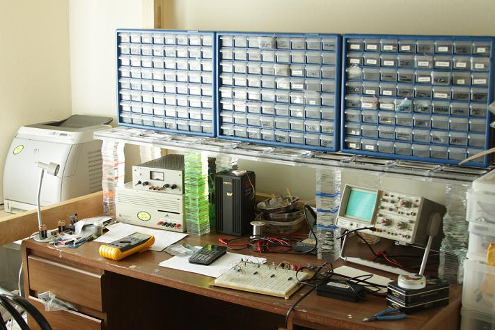

Robotic drawers opener
The robotic "assistant" that helps you find stored items
The Concept
The main idea for this project come from a real need that i have... something who helps me remember where i store all my electronic components, and all the small stuff i have in my personal laboratory.
I have a lot of small drawers storage, and on them there is no a lot of space for write ewrithing that them contains, and olso if i do it, i waste a lot of time reading all the small write, in the process to find what i need. (even if i store metodically the item for application field).
So my purposte is to create a robotic drawers opener (a xy cartesian meccanics behind the drawers) and a good software for finding what i need.

Pictrue of a stadard work bench whit a lot of drawers
The Way
The way i will make this is to build a cartesian movement system to put behind the drawers, whit a little actuator who can open the drawers, then i will make an electronic system to drive the motor to the precise position of the drawers.
then i will focus on the software who fin the item and tell to the electronic where they are; firstly i will make it text based (normal serching process) then i will try to make it more user friendly (some freind of mine tell me "you should project this in a way that your grandma can olso use it" so i will try this).
Future steps will be make it modular in the dimesnion and size of the drawers used.
And more.....